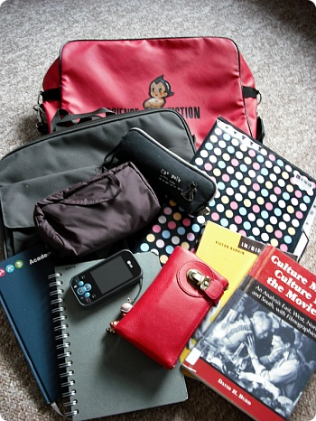
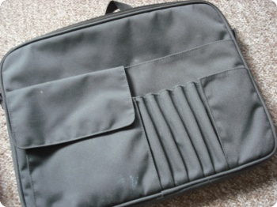
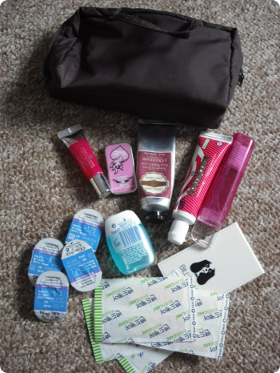
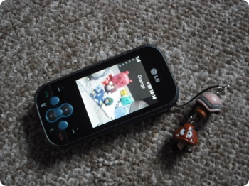
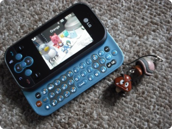
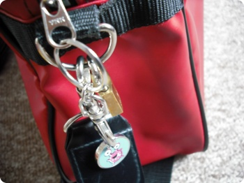
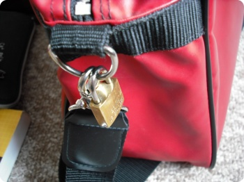

나...나도 찍어보았다!!!
학교댕겨와서 바로 바닥에 내려놓고 찍은사진^^**
절대로 과제하기싫어서 딴짓하는거 아...............ㄴ
01.열심히 들고댕기는 아톰가방
02.가방속 공간분할을 위해 무지에서 구입한 '가방안의 가방'
(이게 늠 맘에들어서 사이즈 다른걸로 하나 더 구입했다능;;)
03.필통
04.파우치 (평소에는 곧잘 잊고 안가져가는데 오늘은 왠일로 들어있네+_+)
05.파일 - 프린트물
06.학교에서 나눠준 스케쥴러 - learning journal 꽉꽉채워서 제출하란다;;OTL
07.스케치북
08.핸드폰
09.Accessorize에서 구입한 지갑
-죠게 구조도 특이하고 엄청 많이들어가서
이것저것 잔뜩 집어넣어 댕기느라 항상 무겁다;;;;
10.도서관에서 빌려온 책두권
학교댕겨와서 바로 바닥에 내려놓고 찍은사진^^**
02.가방속 공간분할을 위해 무지에서 구입한 '가방안의 가방'
(이게 늠 맘에들어서 사이즈 다른걸로 하나 더 구입했다능;;)
03.필통
04.파우치 (평소에는 곧잘 잊고 안가져가는데 오늘은 왠일로 들어있네+_+)
05.파일 - 프린트물
06.학교에서 나눠준 스케쥴러 - learning journal 꽉꽉채워서 제출하란다;;OTL
07.스케치북
08.핸드폰
09.Accessorize에서 구입한 지갑
-죠게 구조도 특이하고 엄청 많이들어가서
이것저것 잔뜩 집어넣어 댕기느라 항상 무겁다;;;;
10.도서관에서 빌려온 책두권

제가 무지제품을 좀 좋아라~합니다///
귀여운 팬시제품보다는 이런 아저씨스러운(...;;;)
오피스용품?? 같은게 넘 좋아요/////
립글2개랑 / 핸드크림 / 치약칫솔 / 일회용렌즈
마우스워시 / 거울 / 반창고
처음에는 보다폰을 구입했었는데
문자보낼때마다 ABCABC누르는게 느므 짜증나서
결국 스마트폰으로 교체
이거 텍스트메세지 보낼때 완전 편해요 ㅜㅜ
배경화면은 전에 일주일프로젝트로 만들었던 점토인형들 ㅋㅋㅋ
아무생각없이 집어와서 가방에 주렁주렁 달고댕깁니다^^;;;
작은 자물쇠랑 반값세일하길래 ￡1.50 정도에 사온 키홀더
귀여운 팬시제품보다는 이런 아저씨스러운(...;;;)
오피스용품?? 같은게 넘 좋아요/////

요 파우치도 무지에서 구입한것립글2개랑 / 핸드크림 / 치약칫솔 / 일회용렌즈
마우스워시 / 거울 / 반창고


내 전화기~~~~>_<처음에는 보다폰을 구입했었는데
문자보낼때마다 ABCABC누르는게 느므 짜증나서
결국 스마트폰으로 교체
이거 텍스트메세지 보낼때 완전 편해요 ㅜㅜ
배경화면은 전에 일주일프로젝트로 만들었던 점토인형들 ㅋㅋㅋ

오다가다 귀여운 키홀더를 발견하면아무생각없이 집어와서 가방에 주렁주렁 달고댕깁니다^^;;;
작은 자물쇠랑 반값세일하길래 ￡1.50 정도에 사온 키홀더

요 자물쇠는 원래 사물함에 달 목적으로 샀다가
사이즈가 안맞는데 반품하러 가기는 귀찮고해서(........;;)
그냥 가방에 달았는데 의외로 보는사람마다
왜 자물쇠를 달았냐고 물어봐서 신기했어욤;;;;;
그나마 오늘은 파일철이라던가 그림도구가 별로 없어서
가뿐하군요^^;;
어떤날은 타블렛에 색연필 파스텔등등 마구마구 우겨넣어서
어깨끊어질거같아요;;; 학교까지 걸어서 10~15분정도인데
학교 가기도 전에 지친다능;;;;
사이즈가 안맞는데 반품하러 가기는 귀찮고해서(........;;)
그냥 가방에 달았는데 의외로 보는사람마다
왜 자물쇠를 달았냐고 물어봐서 신기했어욤;;;;;
그나마 오늘은 파일철이라던가 그림도구가 별로 없어서
가뿐하군요^^;;
어떤날은 타블렛에 색연필 파스텔등등 마구마구 우겨넣어서
어깨끊어질거같아요;;; 학교까지 걸어서 10~15분정도인데
학교 가기도 전에 지친다능;;;;